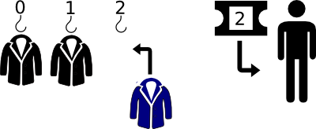
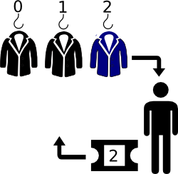
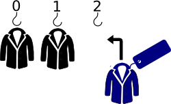
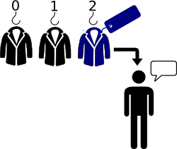
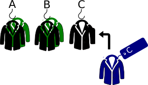
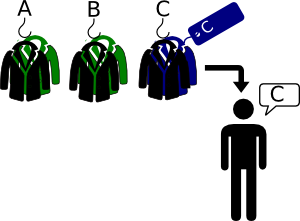
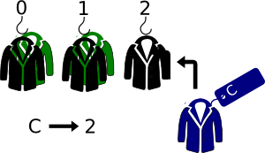
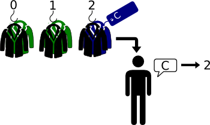

Preface
This rather long post is my attempt to explain to novice programmers how hash tables work. A hash table is a data structure for storing key-value pairs and is part of the standard library of many languages. Depending on your language of choice, you might know hash tables as hashes, HashMaps, dictionaries, dicts, associative arrays, or symbol tables.
If you're already familiar with hash tables, you'll probably spot many points in this post where I have either simplified things, or avoided talking about them entirely. If you think that any of these simplifications hinder rather than help understanding, then please leave a comment or drop me an email - I have not doubt that this post could probably be improved!
Introduction
Imagine that you have a job as a coat check attendant at a nightclub. The set up is pretty straightforward: you have a desk and one hundred coat hooks labeled from 0 to 99*. When a customer wants to drop off their coat, you put it on the lowest-numbered empty hook and give them a ticket with that number written on it.

When they want to pick up their coat, they give you the ticket, and you give them the coat from the corresponding hook.

The system works nice and smoothly and allows customers to drop off and pick up their coats very efficiently. Let's say that the coat hooks are laid out in a sensible pattern that means that you can get to any given hook in two seconds. So the time it takes to drop off a coat is always two seconds - you can glance at the hooks, spot the next available one, and go directly to it. The time it takes to pick up a coat is also two seconds - the customer hands you their ticket, and you can go directly to the hook with that number.
The problem with this system
The only problem with this is that customers keep losing their tickets. Once somebody has lost their ticket, the whole system breaks down - the only way to reunite the customer with their coat is to get a description of it, then go hunting through all the coats currently on the rack to try to find it. Even if it only takes five seconds to compare a given coat to the customer's description, it also takes two seconds to get between hooks, for a total of seven seconds to check each coat. If all one hundred hooks are occupied, then on average you'll have to check fifty coats before you find the right one (assuming that the customer can give you an unambiguous description!), which means that it takes you three hundred and fifty seconds, or just under six minutes, to find a coat for which the customer has forgotten their ticket.
The name tag system
One night you decide that you've had enough - a whole bunch of customers lose their tickets, and you end up spending the whole night searching for coats that match some vague description. You decide to implement a new system: from now on, whenever you take a coat from a customer, you'll write their name down on a tag and attach it to the coat before you put it on a hook.

Then, when a customer wants to pick up their coat, you can just ask them their name (surely they can't forget that!) and go through the coats one-at-a-time until you find the one with the correct name.

We'll assume, for the purposes of this story, that you never get two customers with the same name.
How does this new process compare to the old one, speed-wise? Let's say that it takes a couple of seconds to write the customers name down, so the total time it takes to drop off a coat is four seconds. Let's also say that it takes just one second to check the name on a tag, so it takes a total of three seconds to check a given coat to see if it belongs to a particular customer (one to check the name, and two to move between hooks). On average, you'll have to check fifty coats to find the correct one, so the average time to pick up a coat is two and a half minutes. This system isn't as fast as the numbered-ticket system if the customer has their ticket, but it's much faster than the numbered-tickets system if the customer loses their ticket!
The first letter system
One night when you are particularly bored, you start thinking about how your system could be improved - as it stands, the numbers on the hooks are kind of useless, since they don't correspond to any useful bit of information. You realize that you can actually fit more than one coat on each hook, and you wonder whether you might be able to use that fact to your advantage. You decide to try another new system: first you get some sticky labels and a pen, and you label the first 26 hooks with the 26 letters of the alphabet. When a customer drops off their coat, you will now use the first letter of their name to decide which hook to put it on - if their name begins with A you will put it on the first hook, if it begins with B on the second, etc. You'll still attach a name tag, just like before.

Here's where it gets interesting; when a customer comes to pick up their coat, you can now to straight to the hook which matches the first letter of their name, and start checking the coats on that hook to find the one with their name tag.

It's likely that there will be more than one coat on the hook, but it's also likely that there will be far fewer than fifty, so this approach should still be a lot faster than the original name tag system. To figure out how much faster, though, will require a bit of work, because it depends on how many coats, on average, are on each hook which, in turn, depends on the distribution of names among your customers. In the worse-case scenario, all one hundred of your customers will have names that start with the same letter, so all one hundred coats will be on the same hook and you will be no better off than under the original system! In the best-case scenario, there will be around four customers whose name starts with each letter, so there'll be four coats per hook. The reality is likely to lie somewhere between the two.
To figure out the expected distribution of coats across hooks, we'll use this list of the 100 most common names in the US (you can, of course, substitute names from any country and get similar results). Here are the names as a list:
JAMES,JOHN,ROBERT,MICHAEL,WILLIAM,DAVID,RICHARD,CHARLES,JOSEPH,THOMAS,CHRISTOPHER,DANIEL,PAUL,MARK,DONALD,GEORGE,KENNETH,STEVEN,EDWARD,BRIAN,RONALD,ANTHONY,KEVIN,JASON,MATTHEW,GARY,TIMOTHY,JOSE,LARRY,JEFFREY,FRANK,SCOTT,ERIC,STEPHEN,ANDREW,RAYMOND,GREGORY,JOSHUA,JERRY,DENNIS,WALTER,PATRICK,PETER,HAROLD,DOUGLAS,HENRY,CARL,ARTHUR,RYAN,ROGER,JOE,JUAN,JACK,ALBERT,JONATHAN,JUSTIN,TERRY,GERALD,KEITH,SAMUEL,WILLIE,RALPH,LAWRENCE,NICHOLAS,ROY,BENJAMIN,BRUCE,BRANDON,ADAM,HARRY,FRED,WAYNE,BILLY,STEVE,LOUIS,JEREMY,AARON,RANDY,HOWARD,EUGENE,CARLOS,RUSSELL,BOBBY,VICTOR,MARTIN,ERNEST,PHILLIP,TODD,JESSE,CRAIG,ALAN, SHAWN,CLARENCE,SEAN,PHILIP,CHRIS,JOHNNY,EARL,JIMMY,ANTONIO
We'll write a quick Python script to figure out the number of names that start with each letter. Don't worry if you can't read Python - we're only interested in the result. Click here to download the text file of names if you want to play along at home.
import string
letter_count = {}
for name in open("names.txt"):
first_letter = name[0]
letter_count[first_letter] = letter_count.get(first_letter, 0) + 1
for letter in string.ascii_uppercase:
print(letter + ' : ' + str(letter_count.get(letter, 0)))
The output from the script shows that, as we expected, the distribution of first letters is far from even:
A : 8
B : 6
C : 7
D : 5
E : 5
F : 2
G : 4
H : 4
I : 0
J : 17
K : 3
L : 3
M : 4
N : 1
O : 0
P : 5
Q : 0
R : 10
S : 7
T : 4
U : 0
V : 1
W : 4
X : 0
Y : 0
Z : 0
The J's are particularly well-represented, partly thanks to diminutive versions of names being listed separately. Some letters, like X, Y and Z, aren't represented at all. Here's the distribution as a chart with letters along the bottom and counts up the side:
The patterns are pretty clear. What are the timings like under this new system? For a customer who's name begins with J, the outlook is not great. It takes two seconds to go to the correct hook, and one second to check each tag. If there are 17 coats on the hook, you'll have to check 8.5 of them on average before you find the right one, so the expected time to find the customers coat is 10.5 seconds. For a customer who's name begins with N, the story is better - it takes two seconds to go to the correct hook, and there's only a single coat so you don't even need to check the tag*.
So, you go on using this new system. It's not quite as fast as a perfectly-working numbered-ticket system, but it's much faster than searching through the coats one-by-one, even for those unlucky customers who's name starts with J or R.
From letters to numbers
One evening you get to work after being on holiday for a week, only to find that somebody has removed your carefully written letter labels! You are halfway through making a new set of labels when you have a sudden realization - the labels on the hooks are not important. All that matters is that you have a consistent system for translating a name to a number, and that you use the same system to figure out the hook for both dropping coats off, and picking them up.
So you write down on a bit of paper "A=0, B=1, C=2", etc. and pin it up next to your desk. Now when a customer drops off their coat, you just look up the appropriate number for the first letter of their name and put their coat on the hook with that number.

When a customer comes to pick their coat up, you look up the number of the hook in exactly the same way.

The first-two-letters system
Now that you've had your flash of insight about the unimportance of the labels, you start to wonder whether you could make things even faster by inventing a different system for translating names to numbers. After thinking for a while, you come up with two important criteria for such a system:
- The same name must always translate to the same number
- There should be an even distribution of coats across numbers, even if many of the names are similar
The current system - using the first letter of the name - satisfies the first criterion, but doesn't do very well on the second. Similar names - i.e. ones that start with the same letter - are translated to the same number, which results in a very uneven distribution. If we look at the chart showing the distribution of coats across hooks, but this time include all one hundred (including the empty ones), we can see how bad the current system is:
Because it only takes into account the first letter of each name, it will never use any of the hooks above number 25. One possible improvement would be to add together the numbers for both the first and second letters of each name. Here's a Python script that does just that:
import string
number_count = {}
letter2number = {}
for i in range(0,26):
letter2number[string.ascii_uppercase[i]] = i
for name in open("names.txt"):
first_letter_number = letter2number.get(name[0])
second_letter_number = letter2number.get(name[1])
hook_number = first_letter_number + second_letter_number
number_count[hook_number] = number_count.get(hook_number, 0) + 1
for number in range(0,100):
print(str(number) + ' , ' + str(number_count.get(number, 0)))
Again, don't worry if you can't read the code - the important thing is the result:
It's certainly an improvement on the first-letter-only system. Now the most crowded hook only has 9 coats on it (rather than 17) and a few more of the higher-numbered hooks are populated. But about half the hooks still have no coats at all on them at all.
The next logical step is to also add on the number for the third letter, then the fourth, and so on. But it occurs to you that there is a couple of fundamental problems with this approach. At some point, you are going to get a summed number for the name that is greater than 99, at which point you won't be able to find a hook to hang the coat on. Also, the numbering approach you've been using so far doesn't do a great job of separating out names because it doesn't take into account the position of each letter. The letter C in a name results in adding 2 to the number regardless of whether it is the first letter, the last letter, or somewhere in the middle.
The all-letters system
Here's a way of solving the problem: multiply the number for each letter by its position in the name. So a letter C as the first character in the name would score 2, as the second character would score 4, etc. This should lead to a more even distribution across numbers- but how about names for which the score is greater than 99? Suddenly it occurs to you - just take the last two digits of the overall score and use that to determine the hook number. Here's some code that implements the scheme:
import string
number_count = {}
letter2number = {}
for i in range(0,26):
letter2number[string.ascii_uppercase[i]] = i
for name in open("names.txt"):
score = 0
for position, letter in enumerate(name.rstrip('\n')):
score = score + (letter2number.get(letter) * position)
hook_number = score % 100
print(name, str(hook_number))
number_count[hook_number] = number_count.get(hook_number, 0) + 1
for number in range(0,100):
print(str(number) + ' , ' + str(number_count.get(number, 0)))
and here's the resulting distribution:
This is clearly the best system yet! Under this scheme, the majority of hooks have one coat on them - just like we wanted - and there are relatively few empty ones. We won't bother going into the calculations, but it's clear from the chart that most of your customers will not have to wait very long to get their coats.
A general solution
Not long after you come up with this final scheme, you get a new job in a much bigger nightclub. This new nightclub has no fewer than one thousand coat hooks! On your first night working there you are nervous - how will your coat checking method work on such a large scale? - but you quickly find out that it works perfectly. All you have to do is take the last three digits of the score for a given name, rather than the last two.
Back to programming
Time to move from the story to reality and ask ourselves what any of this has to do with programming. Well:
- The customers (or rather their names) and their coats are keys and values respectively
- The process of dropping off a coat is equivalent to storing a value in a hash
- The process of picking up a coat is equivalent to retrieving a value from a hash
- The coat hooks are the equivalent of memory locations (just as you can quickly pick up a coat off a given hook, the computer can quickly retrieve data from a given memory location)
- The process of converting a customer name (a key) into a hook number (a memory location) is the equivalent of a hash function
- When two coats are put on the same hook (i.e. two customer names translate to the same hook number), this is equivalent to a hash collision
The number of coat hooks is equivalent to the number of buckets in the hash. Just as in the code above, many real-life hash functions use the modulus operator to split items into a set number of buckets.
The timings that I have used are an attempt to reflect what's going on in the computer, and to illustrate why hashes are extremely fast at inserting and retrieving data. Retrieving data from a specific memory location is very fast, just like going to a specific hook. Searching through a large number of unsorted pieces of data (like in the name tag system) is very slow. While in real life, calculating the hook number for a given name would probably be quite slow, even with a calculator, a computer can carry out a similar hash function very rapidly.
Of course, most implementations of hash tables are more sophisticated that the outline we've drawn here. One big drawback of our coat-hook system is that we need to specify the number of hooks in advance, and to make sure that it's suitable for the number of items of data (coats!) we want to store. Real-life implementations are usually capable of dynamically altering the number of hooks (or memory locations), which makes them considerably more complex.
Image credits:
coat by Rocky Xie from the Noun Project, Hook by Thomas Hirter from the Noun Project, Arrow by Pham Thi Dieu Linh from the Noun Project, Ticket by Gonzalo Bravo from the Noun Project, person by Alexander Smith from the Noun Project, Tag by PeiYing Tang from the Noun Project, speech-bubble by Olyn LeRoy from the Noun Project, Arrow by Pham Thi Dieu Linh from the Noun Project
Comments
comments powered by Disqus